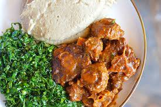

Sadza

Home
Description
Sadza a local delicacy and staple food of Zimbabwe is an amazing meal and can be enjoyed for lunch or supper. Sometimes even for breakfast so you can be full the whole day
Ingredients
Chicken Stew Ingredients: (5 adults Serving)
- olive oil
- salt
- parsley flakes
- chili powder
- black pepper
- red pepper
- ginger root
- 2 medium-size onions
- 1 bunch scallions (about 6-8 scallion plants)
- 3 - 3 1/2 lb. of very ripe red tomatoes
- 2 lbs fresh boneless chicken breast
Sadza Ingredients: (5 adult servings)
Steps
Preparing the Ingredients
- slice up two onions into small chunks and store in an air-tight Tupperware container.
- cut up all tomatoes into 1/4" pieces and store in a large container
- skin and finely cut about 3 ounces of fresh ginger - and store in an air-tight container to maintain freshness
- cut up the chicken into 1/4-inch cubes
- cut up 1 bunch of scallions into 1/4" pieces and store in an air-tight container. Keep both the root and leaves!
Preparing the sauce
- Cover the bottom of a large sauce-pan with olive oil and apply medium to high heat.
- When the oil is very hot (and thin), stir fry the ginger alone for 1/2-minute.
- Add the onions and continue to stir fry. (Leave a tiny bit of ginger and onions for next step).
- Sprinkle enough chili powder to redden the onions and ginger.
- While stirring constantly also add a tinge of red pepper, a fair amount of black pepper.
- Add 1 - 2 teaspoons of salt and continue to stir. Using your finger, grab a half teaspoon worth of dried parsley leaves and pulverize it with your fingers while sprinkling in the pan. Continue to stir.
- The contents should shimmer from the heat and a spicy aroma should be evident.
- Turn the heat to high. The heat will begin to brown/blacken the bottom of the pan.
- Add the cut tomatoes in 4 to 5 portions at a time while stirring constantly. You aim to maintain boiling point while you add tomatoes.
- When all the tomatoes are in, and the sauce has reached/maintained boiling point, turn the heat down to medium and let boil for 10 to 15 minutes. Stir and mash the tomatoes occasionally.
- Re-sprinkle some more chili powder and stir. After five minutes turn the heat down to low, where the sauce is barely at boiling point. Cook for 10-20 minutes stirring and mashing the tomatoes as needed. [At this point if you have other things to do, you can simply turn the heat off and go off to do other things and return to the recipe later.